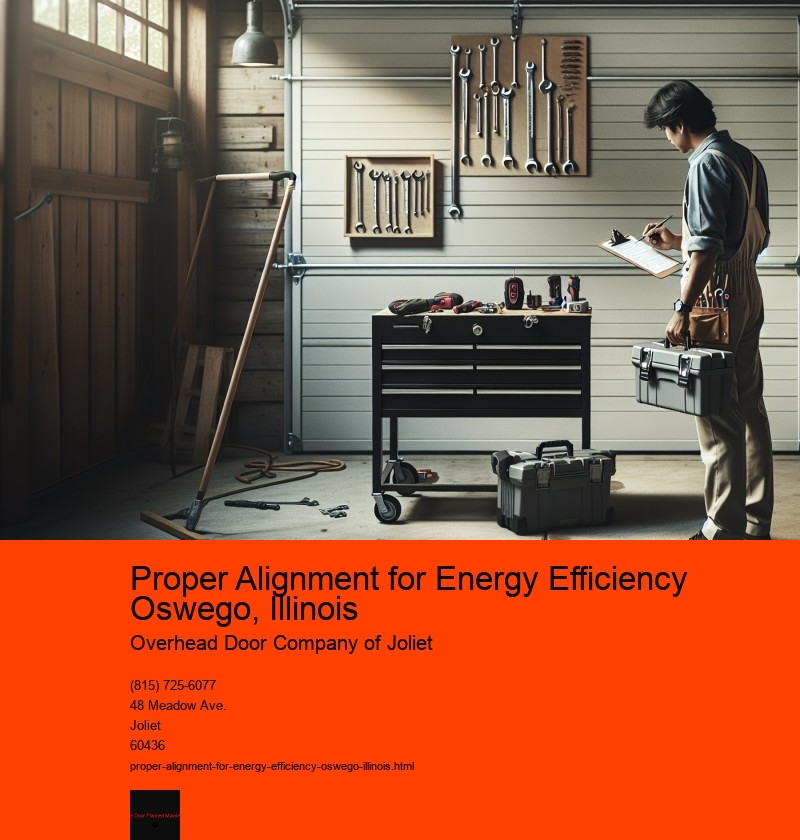

Proper Alignment for Energy Efficiency in Oswego, Illinois
In the quest for sustainable living and environmental responsibility, energy efficiency has become a crucial focus for communities around the globe. Oswego, Illinois, is no exception. With its commitment to reducing carbon footprints and promoting sustainable practices, Oswego is setting a commendable example for other towns and cities. A key aspect of achieving energy efficiency is proper alignment-aligning resources, infrastructure, and community efforts towards a common goal of reducing energy consumption and enhancing sustainability.
Proper alignment for energy efficiency involves several critical components, starting with the alignment of policy and governance. Local government plays a pivotal role in setting the stage for energy efficiency initiatives. By implementing progressive policies that encourage energy-saving practices, Oswego can create an environment that supports both individual and community-wide efforts. This includes offering incentives for homeowners and businesses to upgrade to energy-efficient appliances and systems, as well as supporting the development of renewable energy sources, such as solar and wind power. The alignment of policies ensures that all stakeholders are working towards the same objective, fostering a unified approach to energy efficiency.
Another essential aspect of proper alignment is the integration of technology and innovation. Oswego has the opportunity to leverage modern technology to enhance its energy efficiency measures. Smart grid technology, for example, allows for more efficient distribution of electricity, reducing waste and lowering costs. Additionally, the implementation of smart home systems can help residents monitor and control their energy usage more effectively. By aligning technological advancements with energy efficiency goals, Oswego can harness the power of innovation to drive substantial improvements in energy consumption.
Community engagement is also a vital component of achieving energy efficiency through proper alignment. The residents of Oswego play a crucial role in the success of energy-saving initiatives. Community programs that educate and encourage residents to adopt energy-efficient practices can have a significant impact. Workshops, seminars, and informational campaigns can raise awareness about the benefits of energy efficiency and provide practical tips for reducing energy use. By aligning community efforts with broader energy efficiency goals, Oswego can foster a culture of sustainability and environmental stewardship.
Moreover, proper alignment requires collaboration between various sectors, including local businesses, educational institutions, and non-profit organizations. Businesses can contribute by adopting sustainable practices and reducing their energy footprint, while schools can integrate energy efficiency into their curricula, educating future generations about the importance of sustainability. Non-profit organizations can act as catalysts for change, facilitating partnerships and providing resources to support energy efficiency projects. When all sectors work together in alignment, the cumulative impact can be substantial, driving Oswego towards a more sustainable future.
Finally, the alignment of infrastructure is crucial for energy efficiency. Investing in energy-efficient infrastructure, such as public transportation systems and green buildings, can significantly reduce energy consumption. Oswego can benefit from upgrading its infrastructure to incorporate energy-saving technologies and designs, ultimately enhancing the sustainability of the entire community. Proper planning and investment in infrastructure ensure that the physical environment supports and reinforces energy efficiency efforts.
In conclusion, proper alignment is essential for achieving energy efficiency in Oswego, Illinois. By aligning policies, technology, community efforts, sector collaboration, and infrastructure, Oswego can create a cohesive strategy that maximizes energy savings and minimizes environmental impact. Through concerted efforts and a shared commitment to sustainability, Oswego can not only enhance its own energy efficiency but also serve as a model for other communities striving for a greener, more sustainable future.
